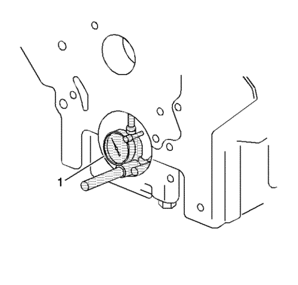

Limpieza e inspección del bloque del motor.
Herramientas especiales
| • | EN-8087 Micrómetro de diámetros de cilindro |
| • | GE-7872 Comparador de pie magnético |
Si desea informarse sobre herramientas regionales equivalentes, consultar Herramientas especiales .
- Elimine el material de sellado de las superficies de conexión de junta (2) con una herramienta adecuada (1).
- Limpie el bloque motor y la carcasa inferior del cigüeñal en un depósito de limpieza con disolvente adecuado para aluminio.
- Limpie el bloque motor con agua limpia o vapor.
- Limpie los conductos de aceite.
- Limpie los orificios ciegos.
- Pulverice aceite de motor en las superficies rectificadas y los diámetros interiores de cilindro.
- Compruebe los orificios roscados. Limpie los orificios roscados con un cepillo para rifles. Si fuera necesario, taladre los orificios e instale suplementos de rosca. Consultar Reparación de roscas .
Nota: No intente rectificar la carcasa inferior del cigüeñal para adaptarla a las superficies del bloque motor.
- Utilice una regla (1) de filo y una galga (2) de espesores para comprobar la planeidad de la superficie de la plataforma. Rectifique con cuidado irregularidades menores. Sustituya el bloque si se debe retirar más de 0,254 mm (0,010 pulg.).
- Compruebe que el carril del cárter de aceite no presenta mellas. Compruebe que el área de acoplamiento de la cubierta delantera no presenta mellas. Utilice una lima plana para eliminar las mellas.
- Elimine el material de sellado de las superficies de conexión de junta en el lado del bloque motor de la carcasa inferior del cigüeñal con una herramienta adecuada (1).
- Elimine el material de sellado de las superficies de conexión de junta en el lado del cárter del aceite de la carcasa inferior del cigüeñal con una herramienta adecuada (1).
- Compruebe las superficies de conexión del lado de la caja de cambios.
Atención: El volante motor se puede romper si la superficie de conexión de la carcasa del cambio no es plana.
- Utilice el siguiente procedimiento para medir la excentricidad de brida del bloque motor en los tetones de orificio de perno de montaje:
| 13.1. | Monte temporalmente los cojinetes superiores y el cigüeñal. Mida el alabeo de la brida del cigüeñal con el comparador GE-7872 (1). |
| 13.2. | Sujete el lado plano de la placa de galga contra la brida del cigüeñal. |
| 13.3. | Coloque el vástago del dispositivo de medición en el tetón de orificio de perno de montaje de la caja de cambios. Ajuste el dispositivo a 0. |
| 13.4. | Registre las lecturas obtenidas de todos los tetones de orificio de perno. Los valores medidos no deberán variar en más de 0,203 mm (0,008 pulg.). |
| 13.5. | Vuelva a comprobar la excentricidad de brida de cigüeñal si las lecturas varían más de 0,203 mm (0,008 pulg.). |
| 13.6. | Extraiga el cigüeñal y los cojinetes. |

- Monte la bancada y los pernos. Apriete los pernos de la bancada según los valores especificados.
- Compruebe los orificios de cojinete de bancada del cigüeñal. Utilice la galga de espesores EN-8087 (1) para medir la concentricidad y alineación de los orificios de cojinete. Consultar Especificaciones mecánicas del motor : LE5, LE9 .
- Sustituya el bloque motor y la bancada si los orificios de cojinete del cigüeñal no están dentro de los valores especificados.
- Extraiga la bancada.
- Compruebe el diámetro de los cilindros usando el indicador EN-8087 (1). Compruebe los siguientes elementos:
- Si los calibres del cilindro no cumplen las especificaciones, monte un NUEVO casquillo del calibre del cilindro. Consultar Desmontaje del casquillo del cilindro : LE5, LE9 y Montaje del casquillo del cilindro : LE5, LE9 .
| © Copyright Chevrolet Europe. All rights reserved |